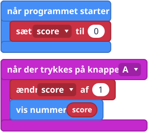
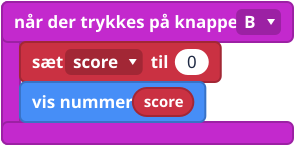
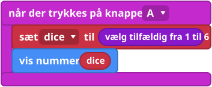

Hvad er det?
En variabel er en kasse med et navneskilt, og den kan holde på én ting, for eksempel et tal. Du giver kassen et navn, som score, og lægger en værdi i den. Senere kan du kigge i kassen eller lægge en ny værdi i.
Sådan husker din micro:bit ting, mens programmet kører.
Blokkene
Klik på Variabler (Variables) og så på Make a Variable..., skriv et navn, og klik på OK. Dine blokke dukker op nedenunder.


Små eksempler



Prøv det her
- Lav tælleren ovenfor, og tryk på A ti gange.
- Tilføj B, så den nulstiller scoren.
- Lav en terning, der viser et tal fra 1 til 6.
- Sværere: vis et hjerte, når scoren når 10 (se Hvis og ellers).
Typiske fejl
- Den viser ordet "score". Du har brugt vis streng (show string) og skrevet ordet ind. Træk i stedet score-blokken ind i vis nummer (show number).
- Scoren hopper til det forkerte tal. Du har brugt sæt, hvor du ville bruge ændr.
- To kasser med næsten det samme navn. "score" og "Score" er to forskellige variabler.
Koden skrevet som tekst
JavaScript: let score = 0
score += 1
basic.showNumber(score)
Python: score = 0
score += 1
basic.show_number(score)
V1 og V2
Det samme på begge.
Lærernoter
- Tid: 30 til 40 minutter.
- Det lærer de: at navngive, gemme og ændre en værdi, og tilfældige tal.
- Typisk misforståelse: sæt over for ændr, og variabelblokken over for det indtastede ord.
- Billederne af blokkene er forenklede tegninger. Tjek de rigtige blokke i MakeCode.